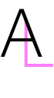
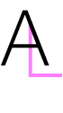

Web designer fra Bergen
Hei jeg heter Anne Lise og for øyeblikket holder jeg på med
AMO kurset It utvikler hos Kodehode.
Min interesse for koding startet når jeg studerte Grafisk design
og vi lærte om det å utvikle hjemmesider. Dette gav meg mersmak
for å lære mer og en ny hobby var skapt.
Jeg har alltid hatt en lidenskap for design og brenner for å lære
mer om det, og det å kunne kombinere design og koding er helt
fantastisk. Mine sterke sider innen koding er CSS, men jeg holder
også på og lære mer om React og React Native.
Det jeg vil gjøre med de kunnskapene jeg tildeler meg er å utvikle
nettsider som har godt design, en god brukeropplevelse og som ikke
minst passer for alle plattformer.
I ukedagene går store deler av dagene til læring og koding men jeg
har også noen andre hobbyer. For å nevne noen så holder jeg på med
håndarbeid som brodering, spiller veldig mye på nettbrettet mitt,
trener og jeg elsker å lese bøker. Jeg er også glad i å bruke tid med
venner og familie og ikke minst å oppleve nye ting.
Jeg er en veldig nysgjerrig person og føler meg noen ganger som en
surikat når det kommer meg noe nytt og spennende for øret.